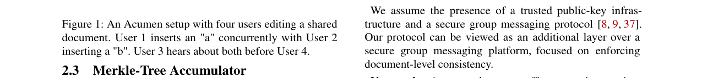

Acumen: A Platform for Encrypted and Accountable Collaborative Editing
总结
现代云协作编辑工具面临隐私与协作之间的核心矛盾：加密用户数据虽然保护了隐私，却阻止了应用服务器处理用户编辑。Acumen 是首个基于冲突-free 复制数据类型（CRDTs）的加密系统，旨在解决这一矛盾。As-is：现有的安全协作编辑系统（如 Snapdoc）存在显著缺陷，包括泄露用户访问模式（通过可变长度的树路径）、提供弱快照一致性，且性能随编辑历史长度线性扩展，导致存储和带宽开销巨大。To-be：Acumen 通过引入密码累加器和一种新颖的安全垃圾回收机制，实现了强快照一致性、编辑历史隐私以及 Fork-causal 一致性。它确保新邀请的用户只能看到当前文档状态，而不会泄露之前的编辑历史。评估结果显示，Acumen 能够支持 25 个用户同时以每分钟 60 个单词（WPM）的速度输入，且延迟和可用性几乎无损失。
背景
协作编辑工具通常采用操作转换（OT）或 CRDTs 等技术。Acumen 采用了基于操作的 CRDTs，具体使用 Treedoc 数据结构。Treedoc 将文档字符建模为树结构中的节点，每个节点包含一个由用户 ID 和用户特定计数器组成的唯一标识符（Disambiguator），用于确定节点地址和兄弟节点的排序。删除操作通过将节点标记为“墓碑”来实现，而不会立即从树中移除节点，这保留了树的结构完整性。
为了在常量空间内高效表示集合，Acumen 采用了 Merkle-tree accumulator（慕尼黑树累加器）。该累加器具有三个关键属性：与集合基数无关的常量空间表示、集合碰撞抗性，以及高效的更新效率。累加器的根哈希值作为常量空间的状态表示，用于验证集合成员资格。
此外，Acumen 增强了 CRDTs 的属性，引入了 Fork-causal Consistency (FCC)。FCC 确保诚实用户在共享的（部分有序的）编辑历史中始终同意文档状态。具体而言，它防止恶意用户通过向不同子集发送冲突操作来分叉编辑历史。

问题
Acumen 假设一个威胁模型，其中中继服务器是主动恶意的（网络对手），且多达 n-1 个客户端被攻陷并可以任意偏离协议。为了构建一个安全且高效的系统，Acumen 识别了四个关键需求：
1. 机密性：被动窃听者不应了解文档内容或访问模式（例如，知道用户 A 在位置 k 插入后删除）。
2. 完整性：诚实用户应维护由真实编辑组成的一致本地文档历史（FCC）。
3. 性能：性能应与明文编辑器相当；加密编辑应保持较小大小；用户存储应随当前文档大小（而非整个编辑历史长度）线性扩展。
4. 安全动态成员资格：用户应能将新协作者添加到现有文档中。新用户不应接收超出当前文档状态的数据（编辑历史隐私），且应保持与现有用户相同的完整性保证（快照一致性）。
现有系统在满足所有这些要求方面存在困难。例如，Snapdoc 泄露访问模式，提供弱快照一致性，且性能随编辑历史长度扩展。核心挑战在于如何在提供强快照一致性的同时，确保新用户无法访问先前的编辑历史，这导致了存储成本随时间无限增长的问题。
解决方案
Acumen 通过三个主要技术创新解决了上述问题：隐藏访问模式、实现强快照一致性以及实现安全垃圾回收。
1. 隐藏访问模式：
为了防止通过可变长度的树路径泄露访问模式，Acumen 将完整的序列化路径替换为仅包含父节点标识符的固定长度路径。这有效地消除了路径长度侧信道。此外，操作哈希计算引入了一个随机数（Nonce）和伪随机函数（PRF），使得 `H(op) = H(op.metadata, PRF(op.rand, op.data))`，从而隐藏了原始字符数据。
2. 强快照一致性：
Acumen 使用 状态描述符 来验证快照。状态描述符包含操作集累加器、Treedoc 累加器、版本向量、历史哈希和签名。为了在不泄露编辑历史隐私的情况下重建用户状态，Acumen 引入了 占位符节点。当快照创建者已处理删除但接收者尚未处理时，Acumen 使用占位符节点（数据为空但非墓碑）来代替被删除的节点。根据定理 1，删除占位符节点与删除真实节点在最终状态执行中产生相同的效果，从而在不泄露历史数据的情况下验证快照一致性。
3. 安全垃圾回收：
为了将存储成本从 O(E)（编辑历史长度）降低到 O(D)（文档大小），Acumen 引入了一种异步垃圾回收机制。
* 因果稳定性：定义了因果稳定墓碑（CST），即其关联的删除操作对所有用户都已稳定的墓碑节点。
* 垃圾回收协议：用户可以修剪叶子 CST，并“展平”父节点也是 CST 的内部节点。展平操作将子节点列表替换父节点，且不会与并发插入冲突。
* 二阶垃圾回收：为了解决快照一致性要求（快照必须包含足够的数据以重建所有用户状态）与垃圾回收之间的循环依赖，Acumen 维护两个对象集：主对象（O, T）和次对象（O(2), T(2)）。新操作同时应用于两者。垃圾回收在次对象上运行，一旦次对象稳定，主对象即可安全地进行垃圾回收。
测试结果
Acumen 的评估结果表明，其在性能和安全性方面均优于现有系统。
* 性能指标：Acumen 能够支持 25 个用户同时以每分钟 60 个单词（WPM）的速度输入，且延迟和可用性几乎无损失。
* 存储与带宽效率：与 Snapdoc 相比，Acumen 的编辑大小和快照大小在平衡和最坏情况下均有数量级的提升（从 O(E) 或 O(log E) 降低到 O(1) 或 O(D)）。
* 功能对比：如表 1 所示，Acumen 是首个同时提供强快照一致性、编辑历史隐私、访问模式隐藏以及线性存储扩展的系统。
Acumen 通过密码累加器和二阶垃圾回收机制，成功解决了加密协作编辑中的隐私、一致性和可扩展性难题。